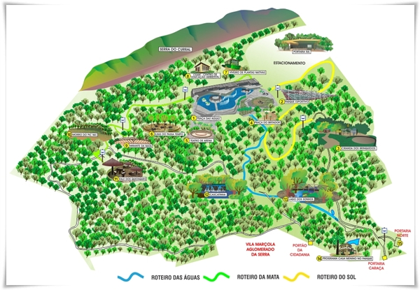

Conheça o parque das Mangabeiras
Localizado ao pé da Serra do Curral, patrimônio cultural de Belo Horizonte, o Parque das Mangabeiras Maurício Campos, projetado pelo paisagista Roberto Burle Marx, conserva em sua área de 2,4 milhões de m2, 59 nascentes do Córrego da Serra, que integra a Bacia do Rio São Francisco.
A uma altitude de 1.000 a 1.300 metros, o clima é ameno.
ugar para descanso, lazer e esportes, o Parque das Mangabeiras Maurício Campos recebe cerca de 15 mil pessoas por mês. Os visitantes podem usufruir de recantos naturais, quadras de peteca, tênis e poliesportivas, pista de skate, brinquedos e atividades culturais.
No Parque das Mangabeiras Maurício Campos, o contato com a vegetação nativa é um dos principais atrativos, sendo representada por áreas de Cerrado e de Mata Atlântica. O Cerrado ocupa as áreas de maior altitude do parque, onde os solos são mais rasos e com baixa disponibilidade de nutrientes. Árvores como o barbatimão, a candeia, a caviúna, a guabiroba, o murici e o pau-santo são comuns nas áreas de Cerrado. A Mata Atlântica está presente nos fundos de vale e encostas adjacentes, onde os solos são mais profundos e ricos em nutrientes. Dentre as árvores típicas deste ambiente podem ser citadas a copaíba, o guanandi o jacarandá, o jequitibá, o pau-jacaré e a quaresmeira.
Contato
Dúvidas?
Entre em contato conosco pelos seguintes canais: